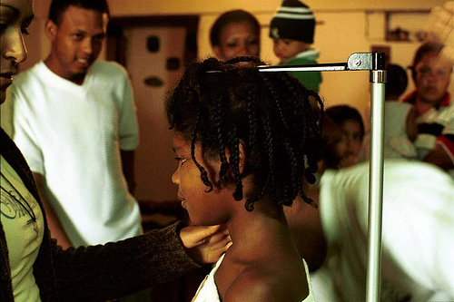

|  |
| orianomada. CC by-nc-sa. Procedencia. |
¿Cómo se realiza la medición de la talla?
-
Hasta los dos años: Lo que se mide es la longitud, colocando al niño o la niña acostada. Se hace con un tallímetro horizontal, se ajusta a los soportes, el de la cabeza que es fijo y el de los pies que es extensible.
-
A partir de los dos años: Se mide la altura de pie; para realizar la medida se coloca al niño o a la niña de pie con los talones, espalda y nuca apoyados en el plano vertical del tallímetro. Ha de tenerse en cuenta que la altura de pie tomada a primeras horas de la mañana (al levantarse) puede ser superior en varios milímetros a la tomada por la tarde.
¿Cómo podemos saber si el crecimiento está dentro de la "normalidad"?
- Tablas de crecimiento: la técnica más usual para el seguimiento de la talla es la medición y comparación con tablas estandarizadas -tablas del crecimiento- en las que están reflejadas las medias normales calculadas para cada sexo y edad, y sus desviaciones estándar. Con ellas se comprueba si cada niño o niña está dentro de los límites de variación normal.
Veamos a continuación las tablas de talla y peso específicas para cada sexo. Con ellas se valora la situación antropométrica del niño o de la niña y su relación con otros de la misma edad.
- Curvas de crecimiento: son unas curvas ascendentes en un esquema de abscisas y coordenadas correspondientes, una a la talla (cm) o peso (kg) y otra a las edades. Unas curvas son para los niños y otras para las niñas. Para cada sexo podemos observar unos números o percentiles (97, 90,75, 50, 25, 10, 3) intercalados al final de las curvas, que se interpretan de la siguiente forma: El percentil 50 o valor central coincide con la mediana de la distribución. Entre los valores correspondientes al percentil 25 y 75 se encuentran el 50% de los casos de cada muestra de edad. Son los más representativos. Por debajo del percentil 25 queda el 25% de los niños con la talla o peso más bajo de su grupo de edad y por encima del percentil 75 existe un 25% de niños que poseen las tallas y pesos más altos de su grupo de edad.
A continuación se exponen estas curvas de referencia.